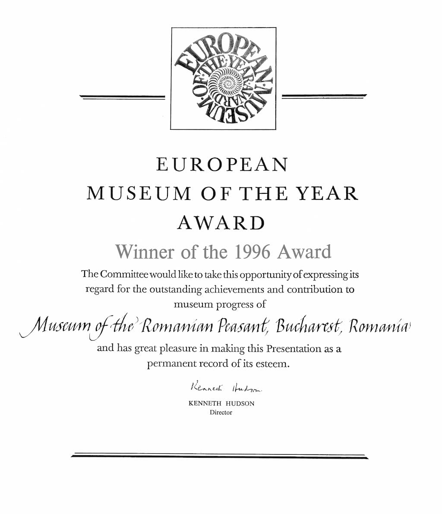
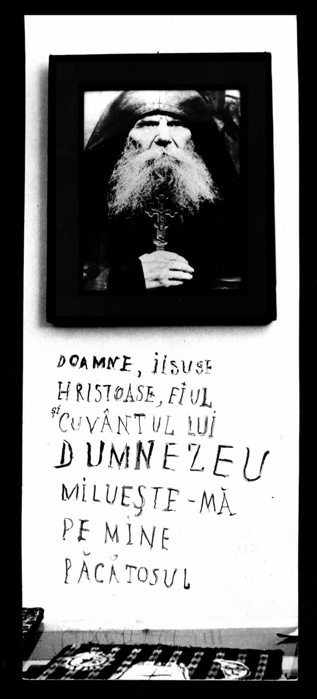

„După decenii de enorme distrugeri cauzate țărănimii de comunism, ar fi părut necesară o expunere „politică” și dură, un bilanț al ororilor petrecute cu satul românesc. Nu am luat-o pe acest drum, justificat, dar plin de verdicte, un drum presărat de tensiuni și adversități. Nu era nici foarte creștinesc răspunsul în chip de răzbunare al noului muzeu! Am fi început noua viață printr-un semn trist și sub lumina neagră a răzbunării. Crucea era tema cea mai potrivită, mai plină de viață ce o puteam găsi. De ce să demonstrăm omniprezența crucii? Pentru ca oamenii să tragă concluzia că nu pot trăi fără cruce…”

Când, în 1991, s-a făcut „cercetarea” la MȚR eram cu toți fericiți că putem participa la cristalizarea unei poziții românești în cultura românească. Venise timpul – credeam noi. Voiam nu doar un muzeu ca instituție obișnuită – partea instituțională nu ne interesa. Ceea ce era fascinant era că puteam construi. Se inventa frenetic. Zburau idei și proiecte în fiecare zi. Aveam tot concursul – cei mari (Domnul Horia Bernea, Irina Nicolau, Speranța Rădulescu) ne susțineau. Atunci muzeul devenise o stare. Aveam cu toții starea aceasta. Norii erau neașteptat de aproape. A fost un timp fecund; un timp în care umblam prin țară întruna; băteam mănăstirile ca „cercetători ai Muzeului Țăranului Român”. Lumea se cam mira că suntem atât de interesați de credință (veneam de la București, adică din oraș) și că ne preocupă deopotrivă adevăratul chip al țăranului român și viețuirea monahilor. Astfel că, în mod firesc, s-a deschis expoziția „Crucea” – care avea să fie cea mai importantă expoziție din Europa pentru un timp. Muzeul găzduia și participa frecvent la acțiuni într-adevăr importante pentru clarificarea identității noastre – încercam să ridicăm ceața comunismului din viețile noastre. Veneau des ierarhi ai Bisericii, cu care muzeul – în primul rând prin directorul și fondatorul MȚR Horia Bernea – colabora frecvent. Deși eram absolvenți ai Facultății de Litere (adică nu prea aveam legături cu muzeografia) am lucrat la expoziția „Crucea”, la sala „Crucea-i peste tot”, împreună cu Irina Nicolau. Aveam o mare dorință să spunem, să ne asumăm. Pe de altă parte, credeam că timpul era prietenul nostru – eram siguri că se poate! Lucrurile se așezau în expoziție singure. Singure își fixau locurile. La sala noastră, nu lucram după un program sau după un proiect anume (deși, de multe ori, ne prefăceam că am avea totul proiectat) – unele obiecte nici nu erau din patrimoniu. Într-o zi, am așezat în fundul sălii, pe peretele din față, chipul Părintelui Paisie Olaru – și Irina și eu eram foarte bucuroși că ne venise ideea și că făcusem asta. La puțin timp a trecut prin sală Horia Bernea; avea pensula în mână – lucra la o sală apropiată de sala noastră. S-a apropiat de fotografia sfântului și a scris sub ea, cu pensula „rugăciunea inimii” (e fotografia de alături). Fără să spună nimic a plecat. Era timpul în care totul era firesc. Gândeam la expoziții manifest mărturisitoare – „Omul roșu” era una dintre ele. Era o împreună lucrare – fiindcă eram adunați și lucram în numele Crucii, în numele lui Hristos.

După încheierea expoziției, încetișor, muzeul s-a instituționalizat. Apăruse planificarea în cercetare. Normele de la minister. Trebuia să gândești la acele norme, în acele cadre. La scurt timp, cineva a șters „rugăciunea inimii” de sub chipul Părintelui Paisie Olaru. Obiectele din sala „Crucea-i peste tot” au început „să plece” la depozit. Sala „Crucea-i peste tot” și-a schimbat numele în „Sala ferestre”! La rândul nostru, cei care am venit aici din dragoste pentru țăranul din noi, am început și noi să plecăm. De aici încolo a urmat „ceva”, până astăzi, când muzeul organizează mese de carne și de brânză în Postul Mare, la care îi invită pe toți iubitorii de „tradiție”! (Nu-mi dau seama despre ce fel de tradiție e vorba – sau, chiar dacă-mi dau seama, nu voi spune). Aceasta-i Crucea Muzeului Țăranului Român.
Mugur Vasiliu
Targul Taranului va invita sa lasati iarna deoparte si sa imbracati haine de primavara!
Pe 13 si 14 martie, de dimineata de la ora 9:00 pana spre dupa-amiaza, Targul Taranului va asteapta, pe doua roti sau pe patru roti, dupa cum doriti, la Muzeul Taranului Roman, Sos. Kiseleff, intrarea Monetariei.
Va puteti rasfata cu pastrama de rata din zona Botosaniului si cu afumaturi fragede ardelenesti de-ti lasa gura apa, cu branza de capra cu seminte de mac sau cu nuci - dupa preferinte - de la Crit si cu branza de burduf intr-o haina fistichie de brad de la Fundata sau cu cascaval cu piper. Toate sunt pe gustate ca sa va reamintiti gustul minunat al produselor traditionale!
Targul Taranului, organizat de Grupul de Initiativa Radu Anton Roman si partenerii sai, te asteapta sa-ti amintesti bucuria primaverii!
Ceea ce puteți vedea/citi, puțin mai la stânga, nu este o glumă de prost gust făcută de niște băieți de cartier cu probleme grave la cap, ci o invitație „serioasă” a Muzeului Țăranului Român, făcută de conducerea muzeului (după cum citim ca pe dozele de bere: „Mereu actual. Din 1906”). Astfel țăranul român face invitația tuturor să vină în POSTUL MARE AL ÎNVIERII MÂNTUITORULUI pentru a se „rasfata cu pastrama de rata din zona Botosaniului si cu afumaturi fragede ardelenesti de-ti lasa gura apa, cu branza de capra cu seminte de mac sau cu nuci - dupa preferinte - de la Crit si cu branza de burduf intr-o haina fistichie de brad de la Fundata sau cu cascaval cu piper. Toate sunt pe gustate ca sa va reamintiti gustul minunat al produselor traditionale!”. Sau poate mai corect această invitație o fac cei care conduc instituția. Să spunem că fie gazdă, fie invitat, țăranul român nu poate avea, „veci!”, legătură cu această spurcăciune sau cu acești spurcați? Sau că muzeul nu poate fi niciodată al „țăranului român” ci al ateului, liber cugetătorului, etc., care sunt cu necesitate anti-români?
Aceasta este direcția pe care merge Muzeul Țăranului Român de un timp încoace. (M. V.)